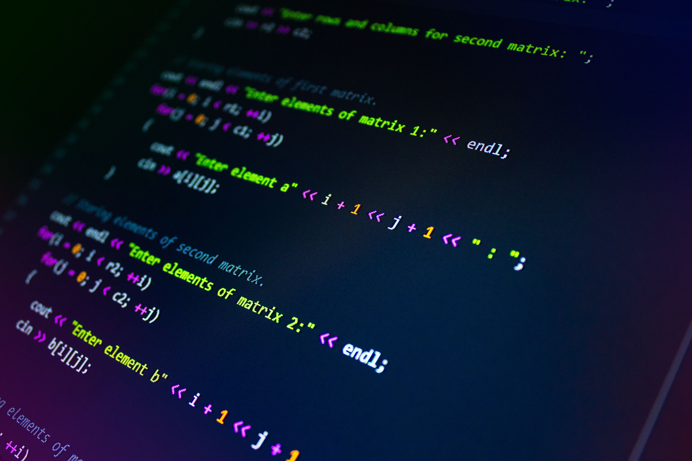

Unggulan
Video Ajar: Cascading dan Spesifisitas CSS
Materi ini membahas bagaimana peramban menyelesaikan konflik gaya melalui urutan kepentingan, spesifisitas pemilih, dan urutan sumber, lengkap dengan simulasi perhitungan spesifisitas pada studi kasus nyata.